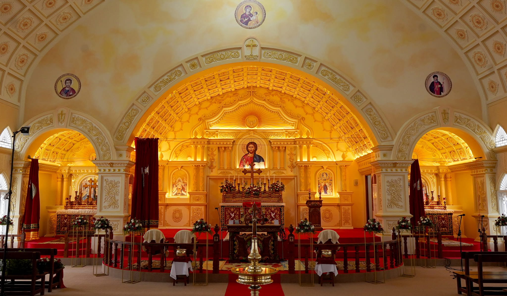

September 1 – 8
Ettu Nombu — the Eight-Day Lent
The beloved fast of St. Mary. Eight evenings of prayer and song, ending in the Feast of her Nativity — the sanctuary at its most golden.
Join UsMalankara Orthodox Syrian Church
Diocese of Bangalore
Jalahalli · Bengaluru
A story of grace, in four chapters
Beneath these white spires in Jalahalli, generations have gathered under the protection of the Holy Theotokos — the Mother of God, whom all generations call blessed.
Chapter I — The Yes
A young woman of Nazareth is asked to carry the impossible. Her answer — one unguarded, courageous yes — changes the history of the world. Every church that bears her name begins with that yes.
Chapter II — The Song
The Magnificat — the oldest hymn of the Church, sung first by Mary herself. It has echoed for two thousand years, and it echoes still, every week, beneath the golden arches of this sanctuary.

Chapter III — The Mother
From the cross, Christ gave His mother to His beloved disciple — and through him, to the whole Church. In the Orthodox East she is the Theotokos, the God-bearer: the first believer, and the mother of all who believe.
Chapter IV — The Church
Orthodox families who came north to Bengaluru carried her name with them. What began as a handful of households at prayer grew into a Valliapally — a great church — its white spires lifting the same ancient confession over Jalahalli.
Luke 1 : 48
From henceforth, all generations shall call me blessed.
The Song of Mary · The Magnificat
Our Parish
“Valliapally” means the great church — but greatness here was never about size. It was built Sunday by Sunday: families who came to Jalahalli for work and stayed to build an altar, mothers who taught the faith at kitchen tables, choirs who learned the ancient melodies by heart.
Today St. Mary's Orthodox Valliapally is a living parish of the Malankara Orthodox Syrian Church, Diocese of Bangalore — a sanctuary of radiant gold beneath white spires, where the Holy Qurbana is offered and every soul is welcome.
Worship With Us
The principal gathering of the parish family — every seat welcome.
Gathering before the liturgy.
The principal celebration of the week.
Classes for every age after the Qurbana.
Area fellowships across the parish.
Begin and end the sabbath in stillness.
The day begins in quiet.
The divine liturgy of the Malankara Orthodox Church.
Close the day in gratitude.
The week is threaded with prayer.
Every day — all are welcome.
Prayers to the Theotokos, 1st & 3rd Wednesdays.
For certificates, membership and everything else.
Sunday, Monday & Saturday.
office@stmarysvalliapally.in
Gallery
Community
Where the youngest hearts first meet the faith.
Sundays · 11:00 AM 02The women's fellowship that bears St. Mary's own name.
1st & 3rd Sundays 03Students and youth — the young church in action.
2nd Sundays 04The ancient melodies of the Orthodox liturgy.
Every Qurbana 05Honouring the elders whose faith built these walls.
Monthly 06Faith made visible, beyond the parish walls.
Year-roundParish Life
September 1 – 8
The beloved fast of St. Mary. Eight evenings of prayer and song, ending in the Feast of her Nativity — the sanctuary at its most golden.
Join UsAugust 15
The Feast of the Assumption of St. Mary — the great festival of the parish, with procession, intercession and fellowship lunch.
Join UsDecember 25
Carols beneath the spires, the midnight Qurbana, and a parish family gathered in the light she first carried.
Join UsEpilogue — Your Chapter
Grief, gratitude, hope, or a name you cannot stop thinking of — the parish prays for every request, by name, before the Theotokos and her Son.
Visit Us
The church stands in Jalahalli, north-west Bengaluru — its doors open before every service, its sanctuary glowing long after the last hymn.
St. Mary's Orthodox Valliapally, Jalahalli, Bengaluru – 560013
9:00 AM – 1:00 PM · Sunday, Monday & Saturday
Saturday 7:00 AM · Sunday 8:30 AM